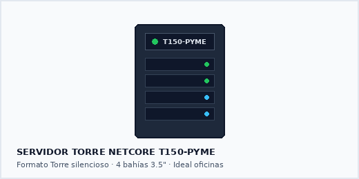

SERVIDOR RACK NETCORE R420-PRO
Pensado para virtualización, bases de datos y consolidación de servicios en CPD. Incluye controladora RAID hardware con caché protegida.
2.490,00 € (IVA no incl.)
Ver ficha técnicaTodos nuestros servidores pasan 24 horas de test de memoria ECC y controladora RAID antes de salir del taller. Puedes entrar en la ficha técnica para ver el desglose completo o pedir presupuesto a medida.
Pensado para virtualización, bases de datos y consolidación de servicios en CPD. Incluye controladora RAID hardware con caché protegida.
2.490,00 € (IVA no incl.)
Ver ficha técnica
Ideal para delegaciones y PYMES que necesitan servidor de ficheros, Active Directory y copias de seguridad locales con bajo nivel sonoro.
1.280,00 € (IVA no incl.)
Pedir presupuesto| Componente | SERVIDOR RACK NETCORE R420-PRO | SERVIDOR TORRE NETCORE T150-PYME |
|---|---|---|
| Formato | Rack 2U (guías incluidas) | Torre profesional (< 28 dBA) |
| Procesador | 2x Intel Xeon Silver 4410Y (24 núcleos) | 1x Intel Xeon E-2468 (8 núcleos) |
| Memoria RAM | 128 GB DDR5 ECC Registered | 64 GB DDR5 ECC Unbuffered |
| Discos y RAID | 4x SSD Enterprise 1.92 TB en RAID 10 | 2x HDD Enterprise 4 TB en RAID 1 + NVMe |
| Gestión remota | IPMI 2.0 dedicado con KVM sobre IP | IPMI básico compartido |